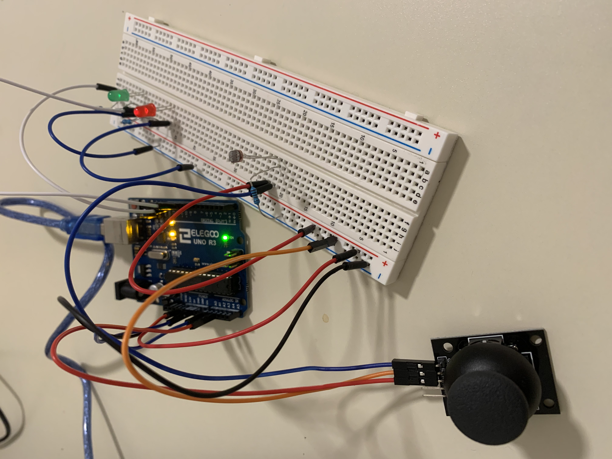
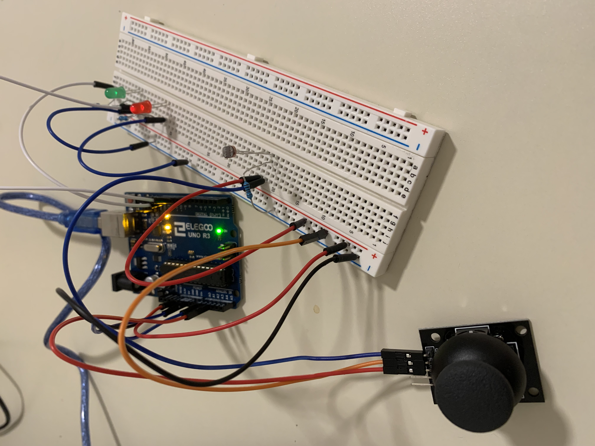
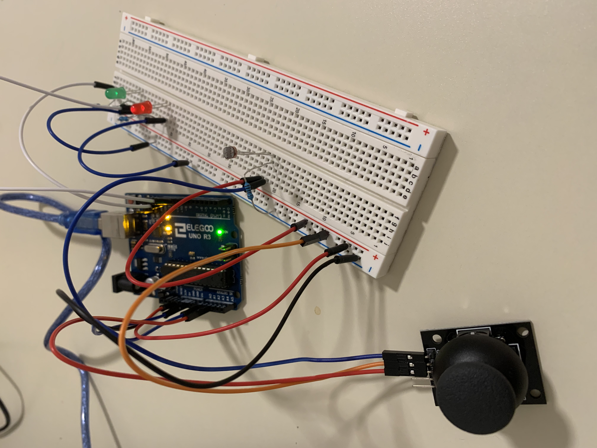
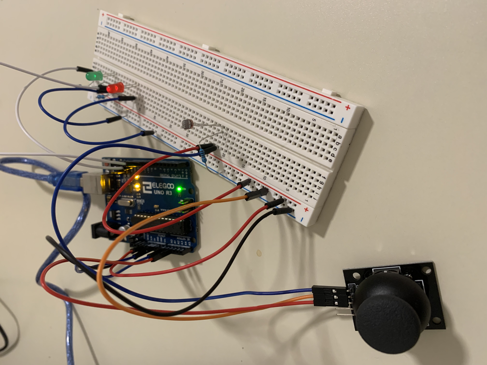

Caption: As the environment's lights turn darker, the LED lights will light up brighter. You can control which LED lights up using the joy stick. When the joystick is pushed up, only the green light is active. When the joystick is pushed down, only the red light is active. When the joystick is in neutral, both LED lights are active.
Caption: Thermal Resistor attached to analog input A0. 1st LED (red) attached from digital pin 9 to ground through 220 ohm resistor. 2nd LED (green) attached from digital pin 10 to ground through 220 ohm resistor. Joystick is attached to analog input A2
/*
The sensor readings during the first five seconds of the sketch execution define the minimum and
maximum of expected values attached to the sensor pin. Initially,
I set the minimum high and listen for anything lower, saving it as the new
minimum. Likewise, I set the maximum low and listen for anything higher as
the new maximum.
Function: As the environment's lights turn darker, the LED lights will light up brighter. You can control
which LED lights up using the joy stick. When the joystick is pushed up, only the green light is active.
When the joystick is pushed down, only the red light is active. When the joystick is in neutral, both LED
lights are active.
The circuit:
- Thermal Resistor attached to analog input A0
- 1st LED (red) attached from digital pin 9 to ground through 220 ohm resistor
- 2nd LED (green) attached from digital pin 10 to ground through 220 ohm resistor
- Joystick is attached to analog input A2
created 29 Oct 2008
by David A Mellis
modified 30 Aug 2011
by Tom Igoe
modified 07 Apr 2017
by Zachary J. Fields
modified 25 Jan 2024
by Ha Tien Nguyen
This example code is in the public domain.
https://www.arduino.cc/en/Tutorial/BuiltInExamples/Calibration
*/
// These constants won't change:
const int sensorPin = A0; // pin that the sensor is attached to
const int ledPin1 = 9; // pin that the LED is attached to
const int ledPin2 = 10; // pin that the LED is attached to
const int joyStickY = A2; // pin that joystick is attached to
// variables:
int sensorValue = 0; // the sensor value
int sensorMin = 1023; // minimum sensor value
int sensorMax = 0; // maximum sensor value
int joyStickValue = 0; // the joystick value
int outputValue = 0; // the output value when the joystick value is mapped out
void setup() {
// turn on LEDs to signal the start of the calibration period:
pinMode(ledPin1, OUTPUT);
digitalWrite(ledPin1, HIGH);
pinMode(ledPin2, OUTPUT);
digitalWrite(ledPin2, HIGH);
// calibrate during the first five seconds
while (millis() < 5000) {
sensorValue = analogRead(sensorPin);
// record the maximum sensor value
if (sensorValue > sensorMax) {
sensorMax = sensorValue;
}
// record the minimum sensor value
if (sensorValue < sensorMin) {
sensorMin = sensorValue;
}
}
// signal the end of the calibration period
digitalWrite(ledPin1, LOW);
digitalWrite(ledPin2, LOW);
// initialize serial communications at 9600 bps:
Serial.begin(9600);
}
void loop() {
// read the sensor:
sensorValue = analogRead(sensorPin);
// read the joystick
joyStickValue = analogRead(joyStickY);
// in case the sensor value is outside the range seen during calibration
sensorValue = constrain(sensorValue, sensorMin, sensorMax);
// apply the calibration to the sensor reading
sensorValue = map(sensorValue, sensorMin, sensorMax, 255, 0);
// map out the joystick values to the range of the analog out:
outputValue = map(joyStickValue, 0, 1023, 0, 255);
// print the results to the Serial Monitor in case debugging needs to happen:
Serial.print("Joy Stick Value = ");
Serial.print(outputValue);
Serial.print("\t Photo Resistor Value = ");
Serial.println(sensorValue);
if (outputValue < 5) { // if joystick is pushed up, the output value is 0 most of the time
// fade the green LED using the calibrated value and turn the red LED off
analogWrite(ledPin2, sensorValue);
digitalWrite(ledPin1, LOW);
} else if (outputValue > 200) { // if joystick is pushed down, the output value is most of the time 255
// fade the red LED using the calibrated value and turn the green LED off
digitalWrite(ledPin2, LOW);
analogWrite(ledPin1, sensorValue);
} else { // if joystick is in neutral
// fade both LED using the calibrated value:
analogWrite(ledPin1, sensorValue);
analogWrite(ledPin2, sensorValue);
}
}
The photoresistor can be either R1 or R2 in my voltage divider. However, the placement of the photoresistor determines how the output voltage responds to changes in light.
With a 16-bit ADC and 10-bit PWM, you'd map the 16-bit input range (0-65535) to a 10-bit output range (0-1023). So the code would change to this: sensorValue=map(sensorValue,0,65535,0,1023)